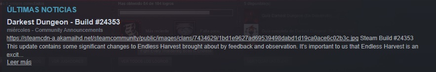
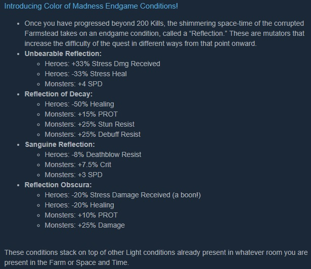
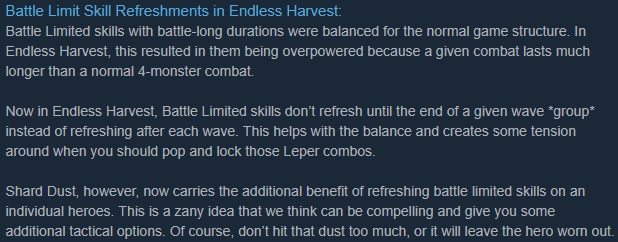

Darkest Dungeon: Build #24353
El día Miércoles 15 de Agosto del presente, se hizo público mediante el portal de Steam (al menos por ahí me enteré yo) la liberación de la build #24353 del juego bandera de este blog, ni más ni menos que Darkest Dungeon.
Dicha build probablemente pasaría desapercibida, de tratarse claro de un pack de reparación de bugs y errores (que también tiene algo de eso).
Sin embargo como se puede apreciar en la imágen de la noticia, la mencionada build contiene como principal contenido ajustes significativos de balance, para la misión conocida como la Cosecha Interminable.
Antes que nada les dejo a los que esten interesados, el link oficial de la publicación en Steam. Y ahora procederé a hacer un resumen de los puntos que considero personalmente más relevantes.
Pues bien, lo que nos quiere decir esta imágen es que una vez hayamos vencido 200 esbirros dentro de la Cosecha Interminable, el juego entrará, por así decirlo en modo difícil (no creo que como Stigian, pero eso habrá que comprobarlo), siendo parte de este cambio una nueva mecánica de condición llamada Reflection.
Además de los debuffs (en su mayoría) que se muestran para cada condición, cabe destacar que estas condiciones son stackeables con los colores propios de la sala en cuestión. Lo cual podría significar por ejemplo, que si un héroe llega con el medidor de stress en 50, con suficiente mala suerte, el stress propio de la sala y la condición Unbeareable Reflection, el héroe sea puesto a prueba sin muchas complicaciones.
Por último, pero no por eso menos importante, algo que se veía venir a lo lejos, el nerf a las habilidades de batalla dentro de la misión de la Cosecha Interminable
En misiones convencionales no se sentía demasiado lo OP que estaban las habilidades de batalla, pero aquellos que hayan tenido oportunidad de ver los videos de la guía que hice, se habrán dado cuenta que dentro de la Cosecha Interminable se podía abusar mucho de estas habilidades, un ejemplo eran: Refuerzo del Hombre de Armas o Disparo de seguimiento del Bandolero, ambas habilidades buenísimas tanto defensiva como ofensivamente.
El nerf consiste en que ahora las habilidades de batalla durarán hasta terminar una oleada, entiéndase que dentro de una batalla de la Cosecha Interminable, podíamos toparmos con hasta 6 o más oleadas de monstruos. A pesar de esto se podrá regargar el uso de la habilidade de batalla individualmente haciendo uso del Polvo Cristalino, asumiendo por supuesto los efectos secundarios que esto conlleva.
Por el momento dejo las guías de la build anterior, pero en cuanto haya testeado un poco esta build nueva, no duden que sugeriré al menos una nueva composición y con suerte pueda elaborar un nuevo video de gameplay. Saludos y hasta otra, se despide El Mayu.
Guía de Darkest Dungeon: La Cosecha Interminable
La Cosecha Interminable es una nueva misión incluida en la última expansión de Darkest Dungeon, dicha expansión lleva por nombre Color Of Madness, en español El Color de la locura.
Pues bien, está misión consiste en ni más ni menos que aniquilar a cuanto enemigo se nos cruce en frente.
En esta primera guía (puede que haga más dependiendo...), abordaré los temas de composición, ejecución de la composición en una batalla convencional y explicaré todos los boses que se crucen hasta donde llegue.
Guía de Darkest Dungeon: La Cosecha Interminable Composición
El primer tema que tocaré será la composición (quizá el más importante). Además asumiré que los héroes a usar contarán con todas las habilidades disponibles.
Sin más usaremos:
- En posición 1: Hombre de armas (Tanque/Soporte) -> Refuerzo, Mando, Retribución y Defensor
- En posición 2: Cruzado (Tanque/DPS) -> Azote, Lanza sagrada, Golpe aturdidor y Grito de inspiración
- En posición 3: Bandolero (Alto DPS) -> Disparo de seguimiento, Explosión metralla, Disparo a quemarropa y Disparo de pistola
- En posición 4: Vestal (Curandero/Soporte) -> Consuelo divino, Gracia divina, Luz deslumbrante y Juicio
Con respecto a las habilidades de acampada recomiendo aprender todas en cada personaje y setearlas al momento de encontrar una chimenea. Una sugerencia sería que si el stress no está muy alto se puede usar:
- Limpieza de armas del Bandolero.
- Tácticas y/o Práctica de armas del Hombre de Armas.
- Si alguno de nuestros héroes estuvo a puertas de la muerte también ayudará Erguido del Cruzado.
En cuanto a los abalorios si se puede conseguir los del video sería lo ideal, pero sino:
Recomiendo mucho darle una ojeada al video, ya que ahí explico un poco más a detalle sobretodo la parte de los abalorios.
Sin más, espero que les guste la composición. Saludos.